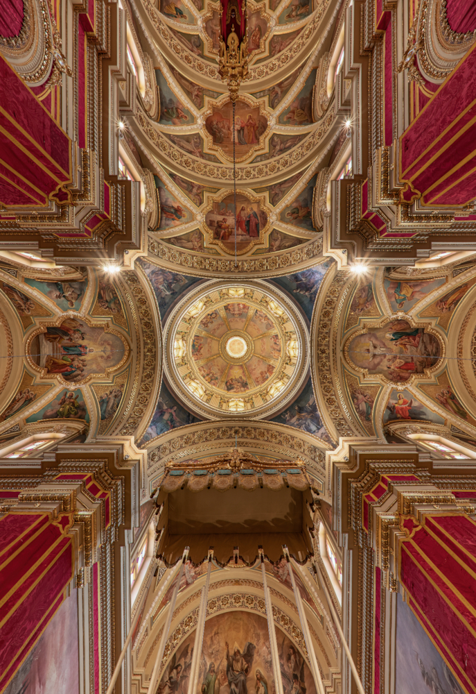
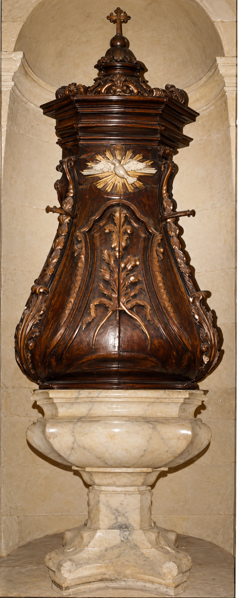

READ · DISCOVER · REMEMBER
Articles
Our church, its paintings, craftsmanship and community stories—all collected in one place.
Church, art and devotion
Explore the building, the works inside it and the research that helps us understand them.

THE CHURCH
Our Church and Its History
From the parish’s beginnings in 1592 to the building, art and devotion of later generations.
Read article →
INTERIOR & CRAFTSMANSHIP
Inside Our Church: the Art of the Choir Stalls
Antonio Farrugia’s carved seating and the history documented by Derek Mercieca.
Read article →
PAINTING & THE DOME
Ġanni Vella: The paintings above us
The ceiling paintings, community support and Christmas Eve 2018 unveiling, from Joseph A. Farrugia’s research.
Read article →
ARTICLE 3 · CRAFTSMANSHIP
The baptismal font: craftsmanship and parish records
Antonio Farrugia’s wooden cover, Saverio Camilleri’s marble work and the records discussed by Derek Mercieca. Includes a clearly labelled colourised illustration.
Read article →
DEVOTION & SACRED ART
Madonna tad-Duttrina
The devotion, statue, symbolism and restoration story.
Read article →Community stories
Memories, traditions and connections shared by Tarxien families near and far.